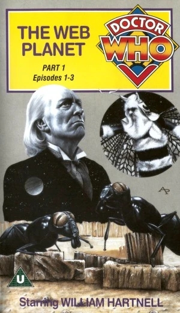
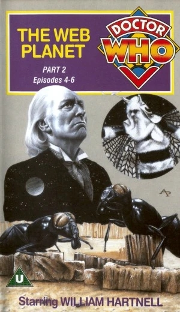
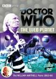
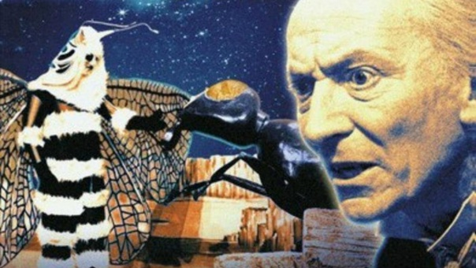
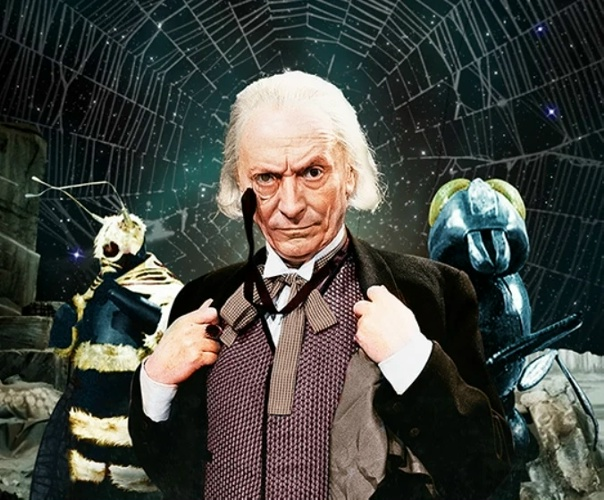

Эра Первого Доктора (2 сезон)
<<< НАЗАД ||| 5. Планета-сеть ||| ДАЛЬШЕ >>>
Субтитры: Русские и Английские |  |
|---|
13 февраля - 20 марта 1965
6 эпизодов по 25 мин.
| 1. Планета-сеть 2. Зарби 3. Бегство от опасности 4. Кратер игл 5. Вторжение 6. Центр | Сохранились 16mm t/r |
|---|
 |  |  |
«Планета‑сеть» переносит команду на Вортис — мир, опутанный зловещей паутиной и захваченный тёмной силой Анимуса. Герои сталкиваются с противоборствующими расами — насекомоподобными зарби и крылатыми меноптрами — и втягиваются в чужую войну. Ключевая интрига строится на том, как невидимый разум подчиняет себе целые виды, превращая их в безвольных слуг. Серия запоминается необычной эстетикой «живой планеты» и идеей угрозы, которая действует не через насилие, а через контроль сознания.
  VHS - сентябрь 1990 |  DVD - 3 октября 2005 |  Blu-ray - 5 декабря 2022 * Версия в нашей группе |
|---|




